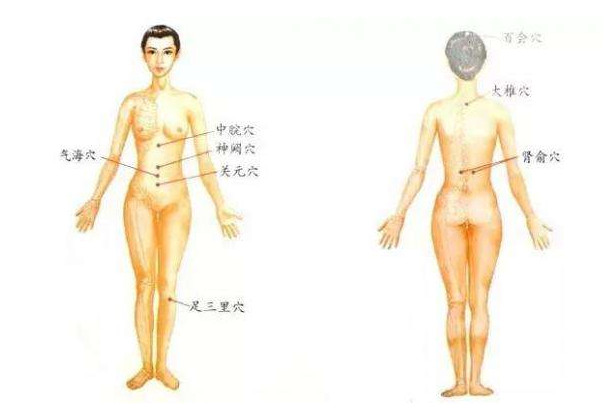
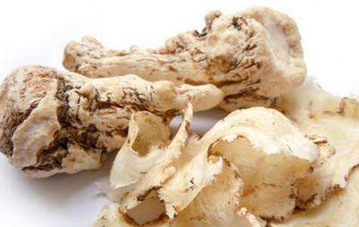

一、艾灸天枢穴
天枢穴属足阳明胃经之穴;此穴位输出的强盛之气具有补充强化人体后天之气的作用。常对天枢穴施灸，可使胃经和大肠经保持活络，促进胃经内气血循环，帮助气血由胃经输向大肠经。胃经气血充盈，则消化功能增强，就给生血系统提供足够的精微物质，为补血提供最基础的动力;大肠经气血充盈，则可保证循、环排泄机能正常，即止泻又通便，保持肠道清洁，使人免受“毒素”的困扰。
二、艾灸关元穴
关元穴是任脉之穴，也是小肠的募穴。此穴是人体元阴和元阳的交汇处，是“男子藏精，女子蓄血”之处;古有“针必取三里，灸必加关元。”之说。艾灸关元穴，有培肾固本、调气回阳的作用，可提高脾胃生化气血的功能;促进肠道蠕动，增强其对营养物质的吸收。对月经不调、痛经、白带异常等妇科疾病效果显著。
三、艾灸血海穴
血海穴属足太阴脾经之穴;此穴是人体脾血的归聚之处，具有祛瘀血和生新血的功能，属女子生血之海。在血海穴施灸，对妇女痛经和经血过多或过少均有效，配合关元穴、三阴交穴效果更佳。痛经伴有呕吐，艾灸此穴同时配合足三里穴可立刻缓解症状。血海擅调妇科血病，是治疗妇科血证及同血分有关的皮肤病的要穴。它能调血、理血、引血。
四、三阴交穴
三阴交属足太阴脾经之穴;三阴交穴是肝、脾、肾三条阴经交汇的穴位，脾统血、肝藏血、肾生血，因此，常对三阴交穴施灸有调和气血、补肾养肝的功用。搜索关注公众号中医艾灸，同时可起到补血、活血，保持血压稳定的作用。
每天上午11点，按揉左右小腿内侧的此穴各20分钟，可排体内湿气、浊气、毒素，对湿疹、荨麻疹、皮炎等有疗效。
常按三阴交穴，补血、活血，保持血压稳定，特别对血压偏低的人补血效果显著。
五、艾灸足三里穴
足三里穴属足阳明胃经之合穴，是胃脏精气功能的聚焦点。足三里穴可理脾胃、调气血、补虚弱，亦能祛病延年，也称长寿穴。对气血亏虚引起的头晕、耳鸣、神经衰弱及胃动力不足的人、胃气虚的人、因用眼过度或失眠熬夜而伤肝的人经常艾灸此穴有很好的改善作用。艾灸足三里，可起到温中散寒、健运脾阳、补中益气、宜通气机、导气下行、强壮全身的作用。
每天上午11点，按揉左右小腿内侧的此穴各20分钟，可排体内湿气、浊气、毒素，对湿疹、荨麻疹、皮炎等有疗效。
常按三阴交穴，补血、活血，保持血压稳定，特别对血压偏低的人补血效果显著。
六、艾灸隐白穴
隐白穴属足太阴脾经之穴，“太阴根于隐白，名曰阴中之阴”。隐白穴有统血、止血的作用。艾灸此穴可刺激脾经，促进气血源源不断的生化，是女性补血的大穴。
七、艾灸髀关穴
髀关穴属足阳明胃经之穴，髀关穴是胃经中脾土微粒沉降之处，是小腹之阴与股前之阳交汇之处，是调节下肢胃经之总穴。艾灸此穴，健脾除湿，固化脾土。理气和胃，治疗胃痛。对风湿、关节炎、臀部和大腿肥胖者减肥有良效。
八、艾灸下关穴
下关穴属足阳明胃经之穴;艾灸此穴对肾虚缺血或胃火导致的牙痛有良效;同时改善肾血虚状况;促进阴阳平衡，祛除胃火。
肾虚缺血导致的牙痛：隐隐作痛、时痛时不痛、日久不愈，伴有牙龈萎缩、牙浮齿动、腰膝酸软。(按摩时配合颊车穴、肾腧。)
胃火导致的牙痛：牙痛剧烈、牙龈红肿、腮部肿起、口渴口臭、咀嚼困难。(按摩时配合颊车穴、支沟、胃腧。)
九、艾灸期门穴
期门穴属足厥阴肝经。呵护肝脏，避免肝血虚。艾灸此穴，对肝血不足有良效。
功效：呵护肝脏，避免肝血虚，常按此穴，对肝血不足有良效。
十、艾灸章门穴
章门穴足厥阴肝经。艾灸章门及期门、足三里、内关，可协调五脏、调节肝脏和胃部的气血。
艾灸章门及期门、足三里、内关，可协调五脏、调节肝脏和胃部的气血。
女人补血的4个最佳时间
1、、月经来临过程
2、、月经结束后七到十天
3、、排卵期身体热
4、、排卵后至月经
补血效果好的食物
1、玫瑰酒——能活血
2、、龙眼肉——含铁质
3、、桑葚干——天然铁
4、黑枣与蜜枣干——补铁养血
5、紫葡萄干——补血
6、南瓜——补血
7、、萝卜干——铁质高
8、胡萝卜——补血
当归补血

现代研究发现，当归含有大量的挥发油、维生素、有机酸等多种有机成分及微量元素，实验研究表明，当归能扩张外周血管，降低血管阻力，增加循环血液量等。
人体内的酪氨酸酶能产生导致雀斑、黑斑、老人斑的黑色素，其活性越高，则老年斑的出现愈早，而且数量也越多。
近年来，医学家对中国唐代孙思邈著的《千金翼方》中抗老消斑、美容健肤的“妇人面药”进行了科学验证，从中筛选出使用频率最高的药物，结果表明，当归的水溶液抑制酪氨酸酶活性的功能很强，因而能抑制黑色素的形成，对治疗黄褐斑、雀斑等色素性皮肤病收效良好，具有抗衰老和美容作用，有助于使人青春常驻。
将当归添加到美容霜、祛斑霜中，以及胶囊雪菲中以求得营养皮肤，防止皮肤粗糙，防治粉刺、黄褐斑、雀斑等作用，经观察无任何副作用。当归还能促进头发生长，用当归制成的护发素、洗发膏，能使头发柔软发亮，易于梳理。
据明代李时珍《本草纲目》的说法是：“当归调血，为女人要药，有思夫之意，故有当归之名。”可见，其解释与上述诗词不谋而合。此外，当归还有另一种意义，即宋代陈承《本草别说》云：“使气血各有所归。恐当归之名，必因此出也。”两种说法均通，后者尤为贴切。
补血养血当归味甘而重，故专能补血，为补血第一药，适用于心肝血虚证所致的面色苍白或萎黄、倦怠乏力、唇甲浅淡无华、头晕目眩、心悸失眠等症。当归与熟地、白芍、川芎配伍，组成补血代表方——“四物汤”，有调经补血之功，尤其适于产后血虚的调治。
2润肠通便中医认为精血同源，血虚者津液也不足，肠液亏乏易致大便秘结。当归可润肠通便，常与麻仁、苦杏仁、大黄合用治疗血虚便秘;与防风、川芎、芍药、大黄、薄荷叶、麻黄等组成防风通圣散，可泻热通便。
3调经活血当归气轻而辛，故又能行血，既可通经调经，又能活络止痛，尤其适合女性使用，特别适合月经不调、痛经、血虚闭经等病证，被古人称为“妇科圣药”。与桃仁、红花、熟地黄、白芍、川芎配伍，组成妇科名方——桃红四物汤，常用于经期提前、痛经。
上一篇：艾灸，当然是传统艾灸的好 下一篇：艾灸--祛除中年男人大肚子！